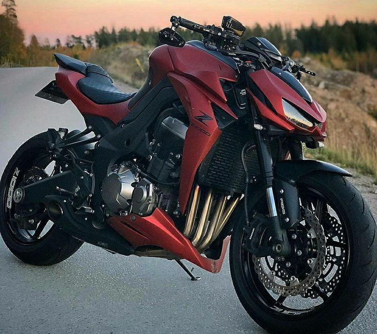
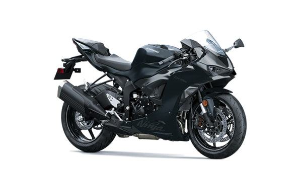
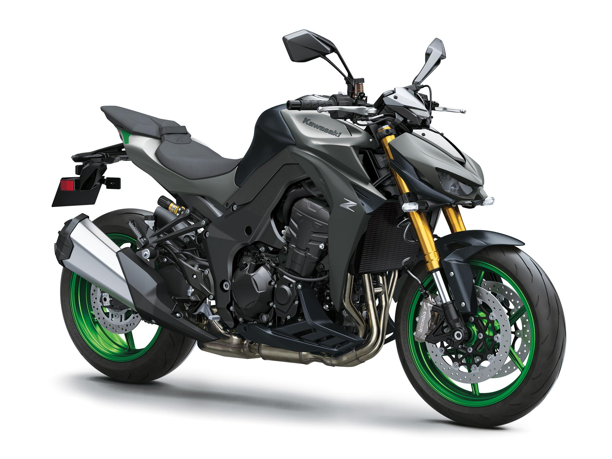
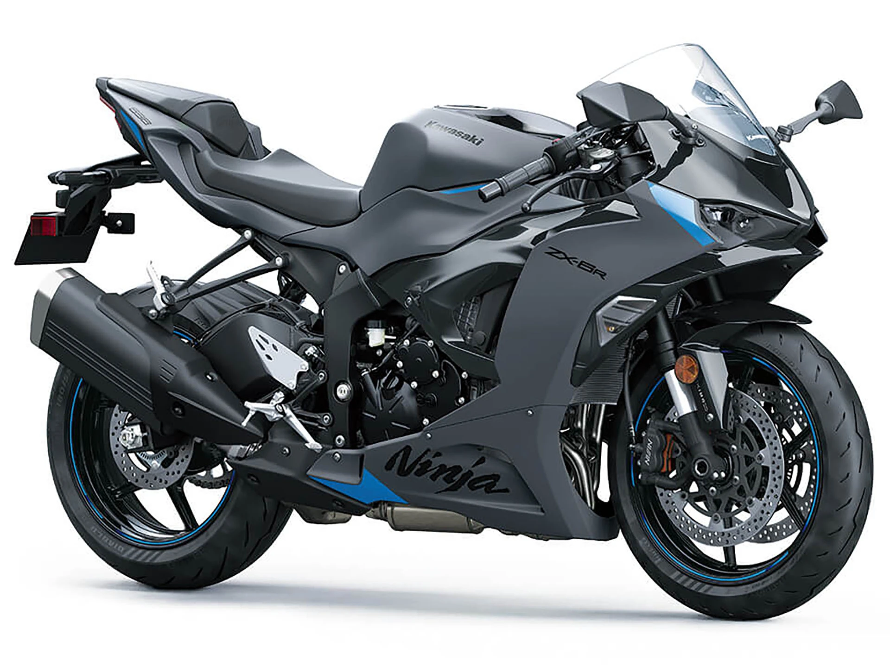
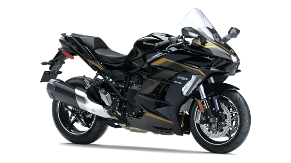
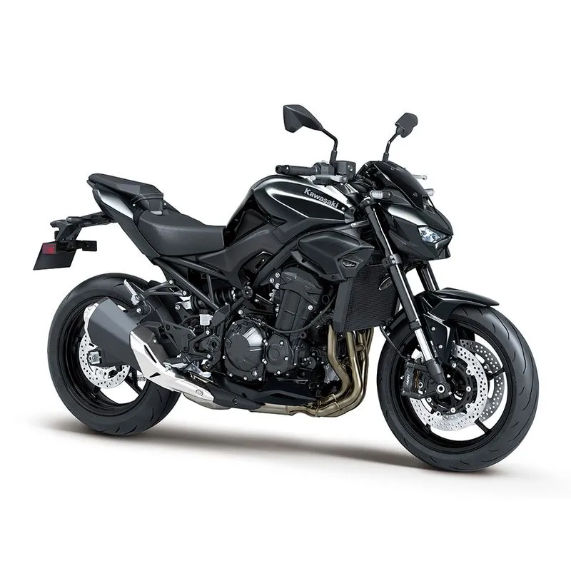
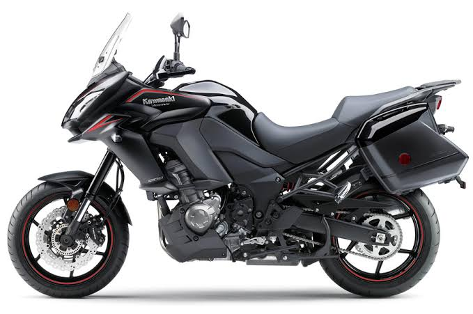

NUESTRAS MOTOS

KAWASAKI z1000
Velocidad máxima: 240 km/h Cilindraje: 1.043 cc Motor: 4 cilindros en línea Potencia: 142 HP Capacidad del tanque: 17 L Peso: 221 kg Transmisión: 6 velocidades
$78.000.000 VER PRODUCTO
NINJA ZX-4R 2026
Velocidad máxima: 250 km/h Cilindraje: 399 cc Motor: 4 cilindros en línea Potencia: 77 HP Capacidad del tanque: 15 L Peso: 189 kg Transmisión: 6 velocidades
$65.000.000 VER PRODUCTO
KAWASAKI Z1100
Velocidad máxima: 240 km/h Cilindraje: 1.099 cc Motor: 4 cilindros en línea Potencia: 136 HP Capacidad del tanque: 17 L Peso: 238 kg Transmisión: 6 velocidades
$93.000.000 VER PRODUCTO
Ninja ZX-6R
Velocidad máxima: 264 km/h, ilindraje: 636 cc, Motor: 4 cilindros en línea, Potencia: 127 HP, Capacidad del tanque: 17 L, Peso: 198 kg, Transmisión: 6 velocidades
$87.490.000 VER PRODUCTO
Ninja h2r
Velocidad máxima: 400 km/h Cilindraje: 998 cc Motor: 4 cilindros en línea sobrealimentado Potencia: 310 HP Capacidad del tanque: 17 L Peso: 216 kg Transmisión: 6 velocidades
$225.000.000 VER PRODUCTO
KAWASAKI Z900
Velocidad máxima: 250 km/h Cilindraje: 948 cc Motor: 4 cilindros en línea Potencia: 124 HP Capacidad del tanque: 17 L Peso: 213 kg Transmisión: 6 velocidades
$79.990.000 VER PRODUCTO
KAWASAKI VERSYS 1000S
Velocidad máxima: 240 km/h Cilindraje: 1.043 cc Motor: 4 cilindros en línea Potencia: 120 HP Capacidad del tanque: 21 L Peso: 257 kg Transmisión: 6 velocidades
$19.000.000 VER PRODUCTO